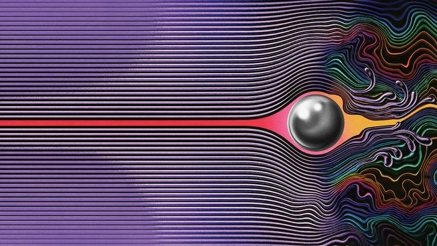

Título del artículo del día
¿Sobrevalorado o Infravalorado?

Este album salio en el 2015 lo lanzo la banda compositora Tame Impala , salio hace once años y es conciderado uno de los mejores albumnes del el R&B y el Pop moderno se compara hoy en dia con entregas de Travis Scott como Cactus Jack y DAMN de Kendrick lamar, este album revoluciono la carrera de Tame Impala ya que convina caciones con el R&B de epocas atras y musica experimental, haciendo sinfonias unicas y hit's mundiales que le ayudaron a ser reconocido mundialmente, con su ultima entrega Deadbeat entrega en el año 2025 con generos como el House, el Dance-Pop y el Techno, fue un cambio muy inesperado pero el album sigue concervando las melodias y la melancolia de Tame Impala.